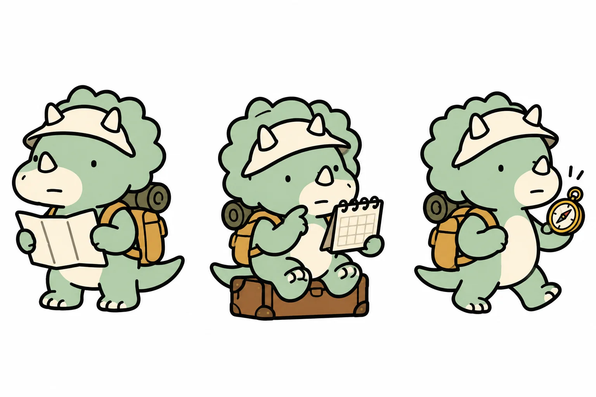
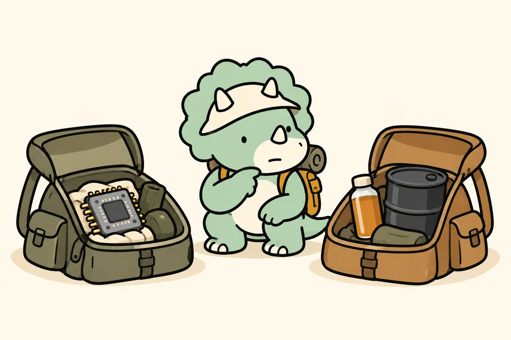
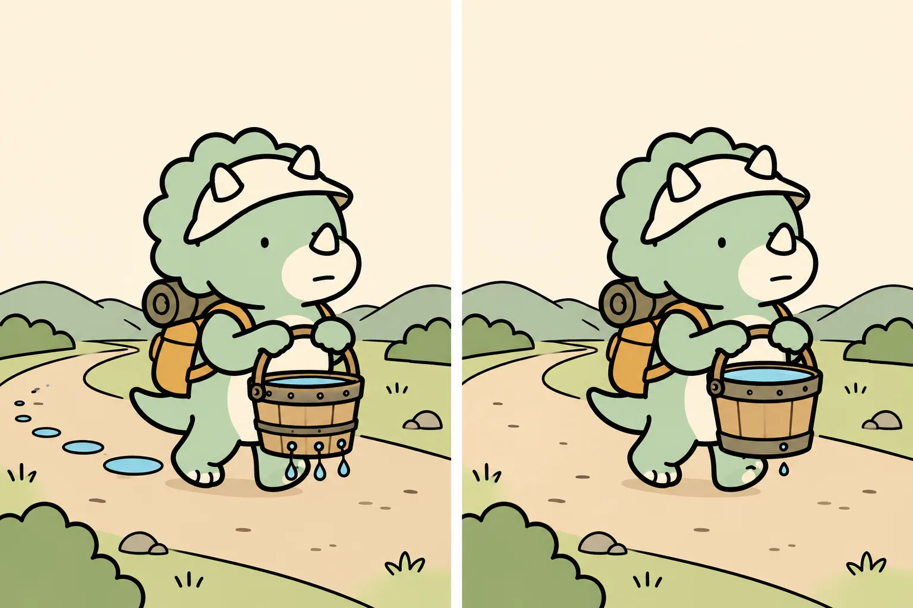
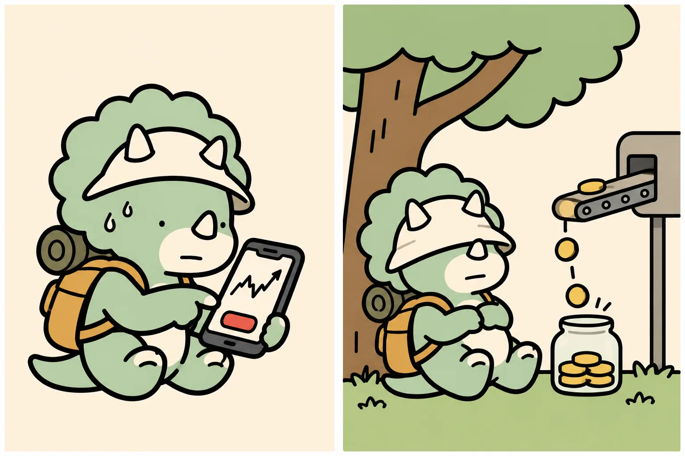

퇴직금은 DB·DC·IRP 중
어디서 굴러가고 있을까
퇴직급여는 내가 따로 넣지 않아도 회사가 쌓아 주는 돈이라, 오히려 가장 덜 들여다보는 계좌가 되기 쉽습니다. 2025년 말 퇴직연금 적립금 501조 원 가운데 75%가 원리금보장형(대기 현금 포함)에 있었습니다. 내 돈이 지금 어떤 칸에서 무엇을 하고 있는지부터 봅니다.

01먼저 결론
- DB형은 받을 돈이 퇴직 직전 평균임금(30일분) × 근속연수 이상으로 정해집니다. 내가 굴릴 일이 없고, 월급이 꾸준히 오를 사람에게 유리합니다.
- DC형은 회사가 매년 한 달 치 이상 임금을 내 계좌에 넣어 주고, 굴리는 건 내 몫입니다. 내 운용수익률이 임금상승률보다 높을 때 유리합니다.
- IRP는 이직·퇴직 때 받은 퇴직금을 세금을 미룬 채 모아 두는 저금통이자, 연금저축과 합쳐 연 900만 원까지 세액공제를 받는 계좌입니다.
- DC·IRP라면 오늘 앱을 열어 대기 현금으로 방치된 돈이 있는지부터 확인합니다. 그다음이 TDF, 그다음이 ETF 자산배분입니다.
이 설명서는 트리노의 여행으로 비유합니다. DB는 패키지 여행(일정과 경비를 여행사가 책임), DC는 자유 여행(경비는 받았고 길은 내가 고름), IRP는 여행 가방 보관함(갈아타는 역마다 짐을 한 곳에 모아 두는 곳)입니다. 제가 실제로 DC 계좌를 굴리는 방식은 08장에 따로 적었습니다.
02퇴직금은 왜 회사 밖으로 나갔나
예전 법정 퇴직금은 회사 장부 안에 있는 돈이었습니다. 한 회사에 오래 다니다 마지막 월급을 기준으로 한 번에 받는 구조라, 회사가 어려워지면 실제로 손에 쥐기까지 오래 걸리는 돈이 되기 쉬웠습니다. 정부 발표로는 2025년 임금체불액의 41.1%(8,229억 원)가 퇴직금이었습니다.
퇴직연금은 이 돈을 은행·증권사·보험사 같은 외부 금융회사에 적립하게 한 제도입니다. DC와 IRP는 내 이름의 계좌에 쌓인 돈이 그대로 내 몫입니다. DB는 밖에 적립된 만큼 보호받고, 회사가 기준보다 덜 쌓아 둔 부분은 회사가 따로 갚아야 할 몫으로 남습니다.
정부는 2026년 10월 29일 「퇴직연금 기능강화 방안」에서, 법 개정안이 연내 국회를 통과하면 2028년 100인 이상, 2029년 10~99인, 2030년 10인 미만 사업장까지 사외적립을 의무화하겠다고 밝혔습니다. IRP 위험자산 한도 70%를 단계적으로 완화하는 계획도 함께 들어 있습니다. 2026-11-10 기준으로는 법 개정 추진 단계입니다.
03DB·DC·IRP 한 장 비교
DB 확정급여형
받을 돈: 계속근로 1년당 30일분 평균임금 이상 (퇴직 직전 3개월 기준)
굴리는 사람: 회사
유리한 사람: 승진·호봉 상승이 많이 남은 사람
DC 확정기여형
쌓이는 돈: 매년 연간 임금총액의 1/12 이상을 회사가 입금
굴리는 사람: 나 (수익·손실 모두 내 몫)
유리한 사람: 꾸준히 굴릴 자신이 있는 사람, 임금 정체 구간
IRP 개인형퇴직연금
역할 1: 이직·퇴직 때 퇴직금을 과세 이연 상태로 보관
역할 2: 연금저축과 합산 연 900만 원 세액공제
유리한 사람: 이직이 잦은 사람, 세액공제가 필요한 사람

| 질문 | DB | DC | IRP |
|---|---|---|---|
| 운용 결과가 내 퇴직급여를 바꾸나 | 아니요 | 예 | 예 |
| 위험자산 한도 | 회사 몫 | 적립금의 70% | 적립금의 70% |
| 적격 TDF·요건 갖춘 채권혼합형 | — | 안전자산 칸에 담을 수 있음 | 안전자산 칸에 담을 수 있음 |
| 내가 추가로 넣을 수 있나 | 아니요 | 규약에 따라 가능 | 예 (세액공제 대상) |
| 계좌 관리 수수료 | 회사 | 보통 회사 | 본인 (금융사별) |
수수료는 회사가 내더라도 펀드·ETF 자체의 운용보수는 어느 계좌든 내 수익률에서 빠집니다.
04DB냐 DC냐, 숫자로 보기
판단 기준은 하나로 줄어듭니다. 내 임금상승률과 내 운용수익률 중 무엇이 더 높을까. DB는 마지막 월급에 근속연수를 곱하니 월급이 오를수록 커지고, DC는 매년 들어온 돈이 복리로 굴러가니 수익률이 높을수록 커집니다.
아래 표는 가상 계산입니다. 20년 근속, 첫해 월급을 1로 두고, DC는 매년 말 그해 한 달 치 월급이 들어온다고 가정했습니다. 세금·보수·중간 이직은 넣지 않았습니다.
| DB 대비 DC 금액 (20년) | 운용수익률 2% | 운용수익률 4% | 운용수익률 6% |
|---|---|---|---|
| 임금상승률 2% | 100% | 121% | 148% |
| 임금상승률 4% | 84% | 100% | 121% |
| 임금상승률 6% | 71% | 84% | 100% |
대각선이 전부 100%입니다. 임금상승률과 수익률이 같으면 두 제도의 결과가 같아집니다. 예를 들어 첫해 월급 400만 원, 임금상승률 4%라면 DB는 약 1억 6,855만 원입니다. 같은 조건에서 DC를 연 2%로 굴리면 약 1억 4,104만 원으로 2,700만 원 넘게 덜 받고, 연 6%로 굴리면 약 2억 320만 원으로 3,400만 원 넘게 더 받습니다.
3문항으로 내 쪽 가늠하기
이 결과는 방향을 잡는 참고입니다. 실제 선택은 회사 규약(DB·DC 선택 가능 여부, 혼합형 여부)과 남은 근속연수를 함께 봐야 합니다.
05DC 전환은 편도 티켓
개인이 제도를 고를 수 있게 해 둔 회사라도 보통 DB에서 DC로 가는 길만 열어 두고, DC에서 DB로 돌아오는 길은 막아 두는 경우가 많습니다. 패키지 여행에서 자유 여행으로 바꾸는 건 되는데, 자유 여행 도중에 다시 패키지로 합류할 수는 없는 셈입니다. 개인 선택권이 아예 없는 회사도 있으니 전환 가능 여부는 회사 규약과 인사팀에서 먼저 확인합니다.
그래서 전환 시점이 중요합니다. 정석은 월급이 정점에 있을 때, 예컨대 임금피크제가 시작되기 직전입니다. DB는 퇴직 직전 평균임금으로 계산되기 때문에 월급이 깎이기 시작하면 받을 돈도 같이 줄어듭니다. 정점에서 DC로 옮기면 보통 그때까지 쌓인 DB 금액을 확정해 DC 계좌로 넘기고, 이후는 내가 굴립니다. 과거 근속분 처리 방식도 규약마다 다르니 함께 확인합니다.
반대로 피해야 할 전환도 있습니다. 주변에서 수익률 자랑이 쏟아지는 과열장에 "나도 굴려 보자"며 옮기는 경우입니다. 되돌릴 수 없는 결정은 단기 시장 분위기가 아니라 앞으로 10~20년 동안 어떻게 나눠 담고 언제 점검할지 계획이 섰을 때 합니다.
06받을 때: 일시금 vs 연금
퇴직급여를 IRP로 옮겨 만 55세 이후 연금으로 나눠 받으면, 일시금으로 찾을 때 내야 할 퇴직소득세를 깎아 줍니다. 소득세법 제129조에 따라 연금 수령 10년 차까지 받는 돈은 원래 퇴직소득세의 70%만, 11~20년 차에 받는 돈은 60%만 냅니다. 2026년 1월 시행된 개정법으로 21년 차부터는 50%까지 내려갔습니다.
| 가상 예시: 일시금이면 퇴직소득세 1,000만 원 | 내는 세금 | 아끼는 세금 |
|---|---|---|
| 한 번에 일시금으로 수령 | 1,000만 원 | 0 |
| 연금으로, 10년 차 안에 다 받음 | 700만 원 | 300만 원 |
| 연금으로, 11~20년 차에 받는 몫 | 그 몫의 60% | 그 몫의 40% |
| 연금으로, 21년 차 이후에 받는 몫 | 그 몫의 50% | 그 몫의 50% |
연도별 연금수령 한도를 넘겨 꺼낸 몫은 감면 없이 과세되고, 퇴직금을 굴려 불어난 수익은 퇴직소득세가 아니라 연금소득세 대상(사적연금 연 1,500만원 이하면 3.3~5.5%, 넘으면 16.5% 분리과세나 종합과세 선택)입니다. 실제 세금은 퇴직소득 금액·근속연수에 따라 달라지니 수령 전에 금융사 예상세액을 확인하세요.
여행으로 치면 경비 봉투를 공항에서 한 번에 다 뜯지 않고 하루치씩 꺼내 쓰면 출국장에서 떼는 세금이 줄어드는 구조입니다. 그사이 봉투 안 돈은 계속 굴러갑니다. 정부는 10월 29일 방안에서 일시금을 원한다고 밝히지 않으면 연금으로 자동 지급하는 방향도 내놨습니다.
07굴리는 3단계
고용노동부·금융감독원이 2026년 5월 20일 발표한 퇴직연금 투자 백서 보도에 따르면 2025년 말 적립금은 501조 4천억 원, 그중 원리금보장형이 75.4%입니다. 이 비중에는 운용 지시를 기다리는 대기 현금도 들어 있습니다. 같은 해 전체 수익률은 6.47%였지만, 내 계좌가 그 평균에 있었는지는 열어 봐야 압니다.

- 방치 확인 · 금융사 앱에서 DC·IRP 계좌의 "운용 상품"을 봅니다. 상품명 없이 현금·대기자금으로만 남은 돈이 있으면 최소한 정기예금이나 디폴트옵션이라도 지정합니다. 디폴트옵션은 내가 운용 지시를 하지 않으면 미리 골라 둔 상품으로 자동 운용되는 장치입니다.
- TDF로 한 번에 · 직접 고르기 어렵다면 은퇴 연도에 맞춘 TDF가 주식·채권 비중을 알아서 줄여 갑니다. 적격 요건을 갖춘 TDF(금융사 앱에 100% 투자 가능으로 표시)는 DC·IRP에서 100%까지 담을 수 있습니다.
- ETF 자산배분 · 직접 나눠 담는다면 위험자산 70%, 안전자산 30% 틀 안에서 글로벌 주식과 채권·채권혼합형으로 분산합니다. 채권혼합형은 주식 비중 40% 이하 같은 요건을 갖춘 상품만 안전자산으로 인정되니 금융사 앱의 위험·안전 구분 표시를 확인합니다. 저보수 상품을 고르고, 1년에 한두 번 비중을 맞춥니다.
제 DC는 3단계로 굴리지만, 이 순서가 꼭 3단계까지 가야 한다는 뜻은 아닙니다. 1년에 한 번도 열어 보지 않을 계좌라면 2단계에서 멈추는 쪽이 3단계를 시작했다가 방치하는 것보다 낫습니다.

08배당노마드의 내 방식
저는 40대 회사원이고, 회사 퇴직연금은 DC형입니다. 이 설명서를 쓰면서 제 계좌 규칙을 다시 꺼내 봤습니다. 금액은 빼고 규칙만 적습니다.
① 위험자산 70%는 꽉 채우고, 안전자산 칸은 채권혼합형으로
저는 은퇴까지 시간이 남았고, 이 돈은 생활비로 꺼낼 일이 없는 돈입니다. 그래서 DC는 위험자산 한도 70%를 거의 다 씁니다. 안전자산 칸을 채울 때는 예금보다 주식이 일부 섞인 채권혼합형 ETF를 고릅니다. 안전자산으로 분류되면서도 완전한 현금보다는 굴러가기 때문입니다. 최근 점검 때 위험자산이 70.3%로 한도에 닿아서, 그 뒤 DC에 들어오는 돈은 채권혼합형만 사기로 했습니다.
② 퇴직연금 하나만 보지 않고 연금 묶음으로 본다
연금저축과 퇴직연금을 하나의 묶음으로 보고 목표를 정했습니다. 지금은 나스닥100 60 · S&P500 18 · 채권혼합 18 · 테마 4입니다. 연금저축은 위험자산 한도가 없으니 공격적인 몫을 그쪽에 두고, DC는 한도 안에서 맞춥니다. 계좌마다 규칙이 다르니 계좌 하나로 완벽한 비율을 만들려고 하면 꼭 한 칸이 막힙니다.
③ 팔지 않고, 새로 들어오는 돈으로만 맞춘다
목표에서 ±5%포인트 넘게 벌어지면 맞추되, 파는 대신 새로 들어오는 적립금으로 모자란 칸을 채웁니다. 연금 계좌는 매매에 세금이 붙지 않지만, 자꾸 팔고 사면 시장 타이밍을 맞히는 게임이 되기 때문입니다. 이 묶음은 괜히 자주 흔들지 않는 게 제 원칙입니다.
④ 앱 숫자는 한 번 의심한다
앱에 찍힌 위험자산 비율이 법에서 말하는 70% 계산과 같은 정의인지 저도 아직 확인 중입니다. 채권혼합형을 어떻게 분류했는지, 대기 현금이 분모에 들어갔는지에 따라 몇 %포인트가 달라질 수 있습니다. 한도 근처에서 매수가 막히면 금융사 고객센터에 정의를 물어보는 게 빠릅니다.
⑤ "남 얘기"인 줄 알았던 가족 계좌
가족 금융 시트를 정리하다 보니 가족 IRP 하나가 ETF 없이 위험자산 0%였습니다. 예금류나 디폴트옵션 상품에 들어 있을 수 있어서 엄밀히 1단계 방치는 아닐 수 있지만, 수십 년 굴릴 돈이 원리금보장에만 있다면 2·3단계로 넘어갈지 따져 봐야 하는 계좌입니다. 바로 바꾸지 않고 중도해지 이율부터 확인하는 중입니다. 예금형 상품이라면 중간에 깰 때 이자가 줄어들 수 있어서, 만기에 맞춰 옮길지 지금 옮길지 숫자로 보고 정할 생각입니다.
⑥ 월배당 ETF는 DC 적립기의 주인공이 아니다
저는 배당을 좋아하는 블로거지만, DC 적립기에는 월배당·커버드콜 ETF를 메인으로 두지 않습니다. 연금 계좌 안에서는 분배금이 생활비로 나오지 않고, 커버드콜은 상승장에서 오름폭을 내주기 때문입니다. 월배당은 인출이 가까워진 뒤 보조 엔진으로 검토합니다.

위 비율은 제 상황(나이·근속·다른 자산)에 맞춘 개인 기록이며 추천 비율이 아닙니다.
09오늘 할 점검표
- 회사 퇴직연금이 DB인지 DC인지, 둘을 섞은 혼합형인지 인사팀이나 금융사 앱에서 확인했다
- DC·IRP 계좌에 상품 지정 없이 대기 현금으로 남은 돈이 없다
- 위험자산 비중이 70% 한도 대비 몇 %인지 알고 있다
- 앱에 표시된 위험자산 비율이 채권혼합형·대기 현금을 어떻게 셌는지 확인했다
- 예금형 상품이 있다면 만기와 중도해지 이율을 확인했다
- 담은 펀드·ETF의 총보수를 알고 있다 (계좌 수수료와 별개)
- 금융감독원 통합연금포털에서 국민연금·퇴직연금·개인연금을 한 번에 조회했다
- 통합연금포털·어카운트인포에서 예전 직장의 미청구 퇴직연금이 없는지 확인했다
- DB→DC 전환을 고민 중이라면, 임금피크 시작 시점과 회사 규약의 전환 조건을 적어 두었다
- 퇴직하면 일시금 대신 IRP로 받아 연금으로 나눠 받을 계획이 있다
10근거와 기준일
- 고용노동부·금융감독원, 「2025년 우리나라 퇴직연금 투자 백서」(2026-05-20 발표, 보도 기준): 2025년 말 적립금 501.4조 원, 원리금보장형 75.4%(대기성자금 포함), 연간 수익률 6.47%. 백서 원문은 열람하지 못했습니다.
- 관계부처 합동, 「퇴직연금 기능강화 방안」(2026-10-29): 사외적립 단계적 의무화 일정, 2025년 체불액 중 퇴직금 41.1%, IRP 위험자산 한도 단계적 완화, 연금 자동 지급 추진.
- 근로자퇴직급여 보장법: DB 급여 수준(계속근로 1년당 30일분 평균임금 이상), DC 부담금(연간 임금총액의 1/12 이상), DC·IRP 위험자산 한도 70%와 적격 TDF·채권혼합형 안전자산 요건(시행령·퇴직연금감독규정).
- 소득세법 제129조 제1항 제5호의3(2026-01-01 시행, 2026-11-10 원문 확인): 퇴직소득을 연금수령하면 연금외수령 세율의 70%(10년 이하)·60%(10년 초과 20년 이하)·50%(20년 초과).
- 연금계좌 세액공제: 연금저축 600만 원, IRP 합산 900만 원 한도, 총급여 5,500만 원 이하 16.5%·초과 13.2%(지방소득세 포함). 2026년 귀속 기준.
DB↔DC 전환 가능 여부와 과거 근속분 처리는 회사 퇴직연금 규약에 따릅니다. 04장 표와 06장 표는 가정치로 계산한 예시입니다.